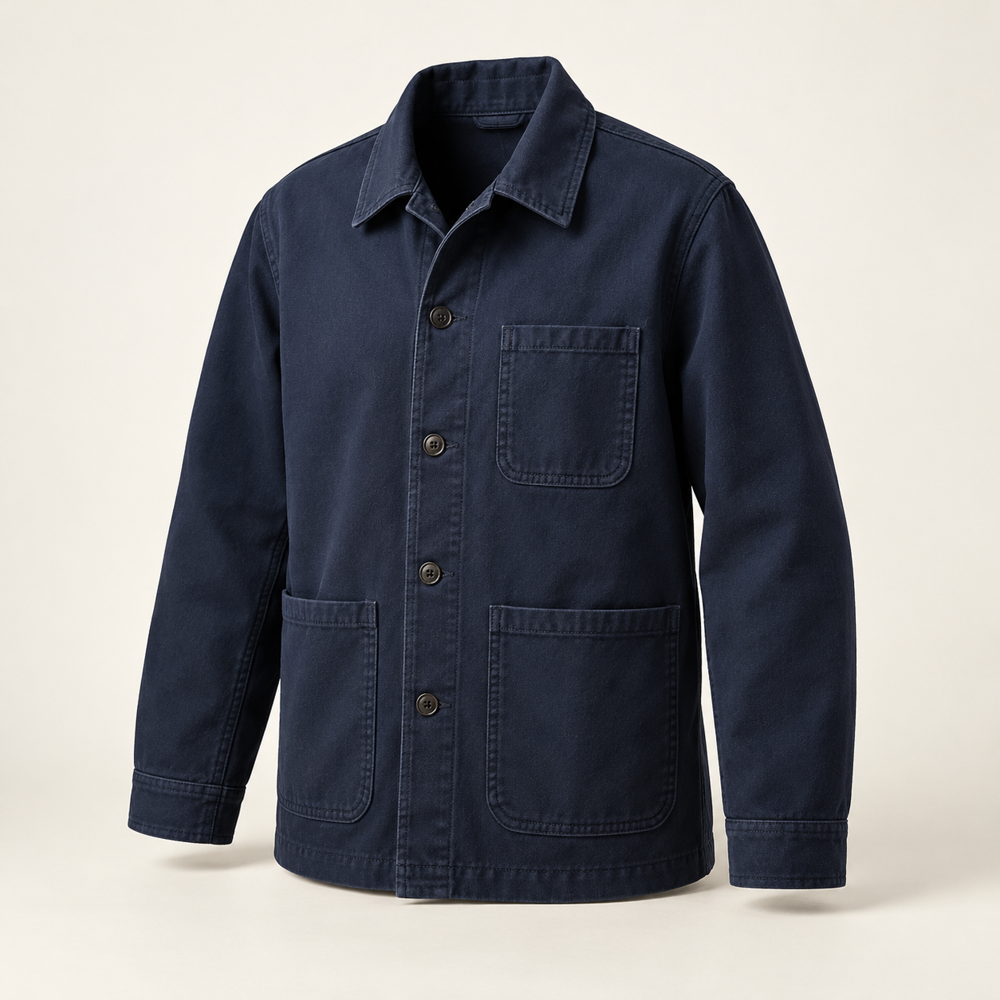

THE CITY EDIT / NO. 01
Made for the
way you move.
Considered layers. Everyday possibilities.
A collection shaped by your point of view.
A COLLECTION. A CONVERSATION.
Good style starts
with listening.
Browse the pieces. Save what speaks to you. Tell us what would make them feel right. Your perspective helps shape what comes next.
FRESH PERSPECTIVES
The weekly edit.
Four concepts to start the conversation.
Tell us which ones belong in your everyday.
Nothing here just yet.
Try another search or explore all pieces.
CONCEPT COLLECTION — Images and material directions are illustrative, awaiting the confirmed range.

TEXTURE / FORM / EVERYDAY USELOOK A LITTLE CLOSER
The details
make the difference.
A softer hand. The right weight. A shape that moves with you. We’re exploring how useful details can bring a little more ease to the everyday.
Tactile fabrics
Canvas, textured knits and softly structured woven fabrics.
Versatile silhouettes
Easy layering and considered proportions, from weekday to weekend.
YOUR POINT OF VIEW
What makes a piece
right for you?
Choose up to three things you look for.
For a particular piece, open its details and join the conversation.